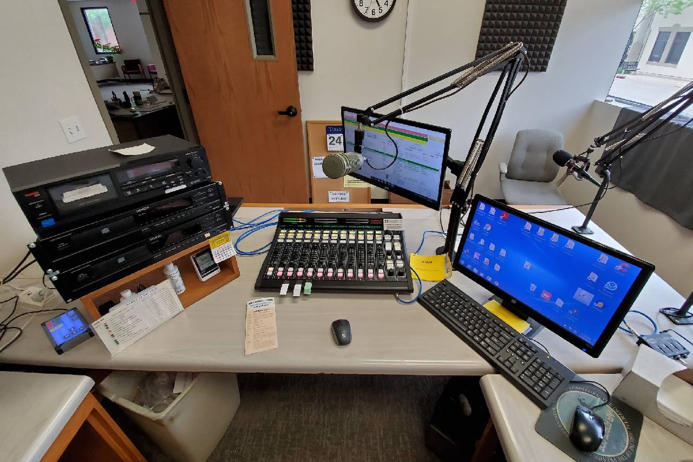
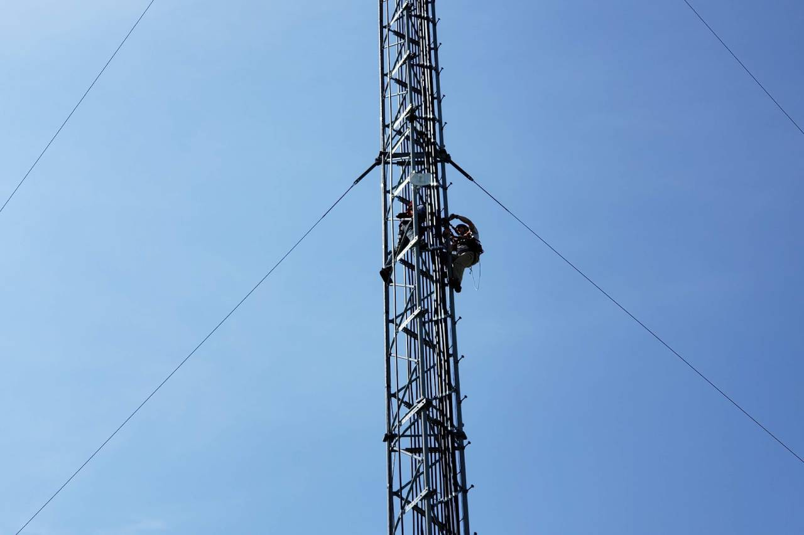

<div id="ajax-page" class="ajax-page-content">
    <div class="ajax-page-wrapper">
        <div class="ajax-page-nav">
            <div class="nav-item ajax-page-prev-next">
                <a class="ajax-page-load" href="portfolio-2.html"><i class="lnr lnr-chevron-left"></i></a>
                <a class="ajax-page-load" href="portfolio-4.html"><i class="lnr lnr-chevron-right"></i></a>
            </div>
            <div class="nav-item ajax-page-close-button">
                <a id="ajax-page-close-button" href="#"><i class="lnr lnr-cross"></i></a>
            </div>
        </div>

        <div class="ajax-page-title">
            <h1>KCMR Radio</h1>
        </div>

        <div class="row">
            <div class="col-sm-8 col-md-8 portfolio-block">
                <div class="owl-carousel portfolio-page-carousel">
                    <div class="item">
                        
                    </div>
                    <div class="item">
                        
                    </div>

                </div>

                <script type="text/javascript">
                    jQuery(document).ready(function($){
                        $('.portfolio-page-carousel').imagesLoaded(function(){
                            $('.portfolio-page-carousel').owlCarousel({
                                smartSpeed:1200,
                                items: 1,
                                loop: true,
                                dots: true,
                                nav: true,
                                navText: false,
                                margin: 10,
                                autoHeight:true
                            });
                        });
                    });
                </script>
            </div>

            <div class="col-sm-4 col-md-4 portfolio-block">
                <!-- Project Description -->
                <div class="project-description">
                    <div class="block-title">
                        <h3>Description</h3>
                    </div>
                    <ul class="project-general-info">
                        <li><p><i class="fa fa-user"></i>KCMR Radio</p></li>
                        <li><p><i class="fa fa-calendar"></i>December 2015 - Present</p></li>
                    </ul>

                    <p class="text-justify"> I have provided IT and broadcast engineering services to KCMR Radio in Mason City. What started as an email offering to help with a hum in the audio chain, led to a summer internship and then ongoing contract work. I spearheaded a move to AOIP technology, network overhaul, automation refresh, and assisted with countless assorted technology projects. During my time at KCMR, I have improved my ability to communicate with people who have a wide range of technical abilities and have learned how to be dependable because technology doesn’t observe holidays!
                    </p>
                    <br>
                    <p>* The second picture of the tower climber is not me, but I was on the job site coordinating the installation of a PTP IP link. This installation increased reliablity and decreased monthly service charges with an ISP.</p>
                    <!-- /Project Description -->

                    <!-- Technology -->
                    <div class="tags-block">
                        <div class="block-title">
                            <h3>Skills Utilized</h3>
                        </div>
                        <ul class="tags">
                            <li><a>IP Networking</a></li>
                            <li><a>Communication Skills</a></li>
                            <li><a>Budgeting</a></li>
                            <li><a>Broadcast Technology</a></li>
                            <li><a>Workstation Support</a></li>
                            <li><a>Audio Engineering</a></li>
                        </ul>
                    </div>
                    <!-- /Technology -->


                </div>
                <!-- Project Description -->
            </div>
        </div>
    </div>
</div>
